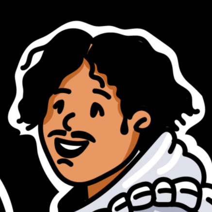
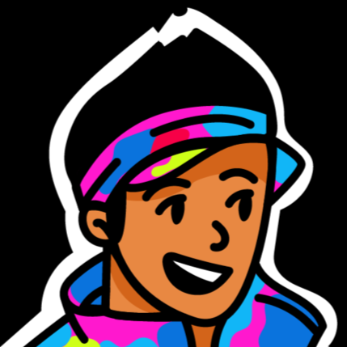

Le nouveau podcast qui célèbre l'après-cinéma!
Aftercinema réunit quatre amis partageant une passion commune pour le cinéma. Entre couple, mais aussi amitiés de longue date, on t'invite à nous retrouver chaque mois pour une discussion sans prétention autour des nouvelles sorties ciné. Au cœur de notre podcast, découvre nos avis sur trois ou quatre films qu'on a vu et sélectionné au cours du mois.
Explore également avec nous dans un épisode bonus : une thématique inspirée par l'un des films pour aller plus loin sur un thème, la carrière d'une personnalité ou le debrief d'un événement incontournable du cinéma.
Snéha, future psychiatre mais surtout fan de Sezane
Walid, consultant en développement durable mais toujours prêt à prendre l'avion pour Rafaël Nadal
Nina deux licences et deux masters dans les médias mais toujours au chômage
Gaspard, ingénieur en informatique et grand adepte de pastis
C'est tous les mois sur ta plateforme de streaming ou sur le web!